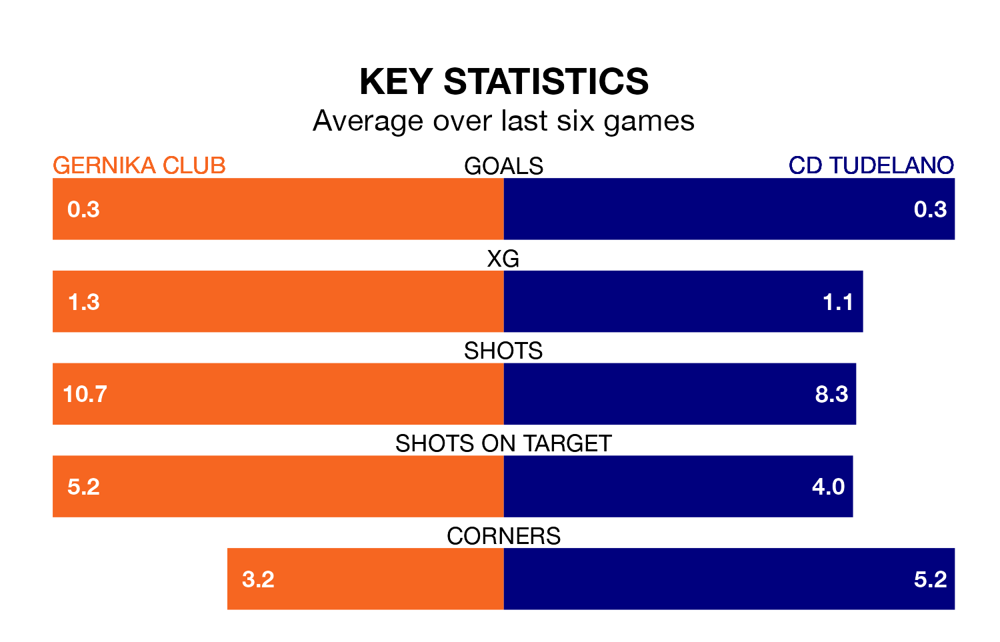

CD Tudelano travel to the Estadio Urbieta looking to secure a first win in 16 Segunda División RFEF Group 2 games against Gernika Club on Sunday.
Tudelano have lost seven and drawn eight matches since they last earned three points – against Brea on November 12.
They face a Gernika Club side who have won five and drawn three over that time.
In the last 10 years, Gernika Club and Tudelano have played each other on seven occasions. They won two each, and they drew three times.
On average, Gernika Club scored 1.1 goals and Tudelano 1.6 in those matches.
Their last meeting was on November 5, when Tudelano won 5-0 at home.
With 27 goals in 26 games so far this season, Gernika Club are scoring at below the league average rate with 1.0 goals per game. And they are conceding more than average, letting in 35 goals at a rate of 1.3 per game.
Tudelano, meanwhile, are average scorers, with 1.1 goals per game. They have conceded 1.0 goal per game.
The visitors are 11th in the table after 26 games, of which they have won seven and drawn 11, earning 32 points.
The home side are one place ahead of Tudelano in 10th, with eight wins and 10 draws putting them on 34 points.
Gernika Club's last match was on March 10, a 1-0 win against CD Calahorra, with Josu Gallastegui Garate getting the goal for Gernika Club.
Tudelano drew 0-0 with Real Sociedad III last time out, also on March 10.
Updated: 15:10 (UTC), 15/03/24